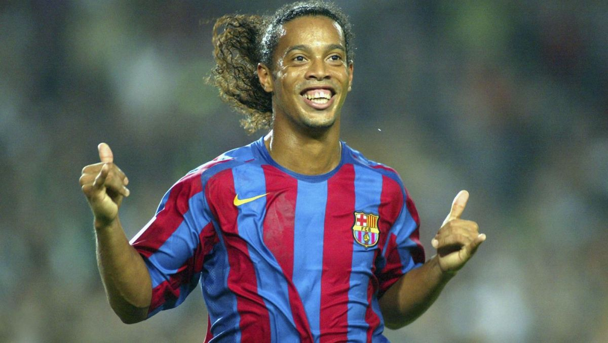

Coś o mnie
Mam na imię Bartosz, interesuję się sportem, głównie piłką nożną. Od lat jestem sympatykiem hiszpańskiej Barcelony. Dopiero zaczynam przygodę z YouCode, ale myślę, że nie idzie mi najgorzej.
Geneza
Moja przygoda z piłką nożną zaczęła się w 2006 roku podczas Mistrzostw Świata w Niemczech. Już wtedy złapałem bakcyla i moja głowa zaczęła bujać w świecie futbolu. Do tego stopnia, że kilka dni po Mistrzostwach stałem się posiadaczem koszulki z numerem 10 i nazwiskiem pewnego ciągle uśmiechniętego Brazylijczyka.Od tamtej pory wiernie kibicuję, oglądam mecze, a repertuar koszulek powiększył się znacznie.
Ronaldo de Assis Moreira

Piłkarz bardziej znany pod pseudonimem Ronaldinho.
Tutaj musiało się znaleźć miejsce dla
tego
Pana, ponieważ to dzięki niemu mam prawdziwą pasję, to jego kompilacje sprawiły, że gdzieś tam w
środku
rozgorzała miłość do piłki nożnej. Co najważniejsze, z jego powodu jestem tym, kim jestem.
Pomimo wielu wybryków pozaboiskowych był prawdziwym magikiem futbolu i raczej mało prawdopodobne,
żeby
kiedykolwiek pojawił się ktoś z jego iskrą.
Hobby/Pasja/Szaleństwo?
Moją pasję postanowiłem uwiecznić na swojej ręce i od niedawna znajduje się na niej kilka ilustracji i portretów związanych z FC Barceloną. Są to: wspomniany Ronaldinho, Carles Puyol i oczywiście herb Blaugrany, którego nie mogło zabraknąć. A więc tak, Barca będzie ze mną już do śmierci. Dla wielu ludzi jest to tylko piłka nożna, tylko klub piłkarski, dla mnie jest to coś więcej i jestem z tego dumny!
Szczególne mecze
Poniżej kilka meczów, które szczególnie zapisały mi się w pamięci:
| Przeciwnik | Wynik | Data | Trener |
|---|---|---|---|
| Real Madryt | 6:2 | 02.05.2009 | Pep Guardiola |
| Manchester United | 2:0 | 27.05.2009 | Pep Guardiola |
| Real Madryt | 5:0 | 29.11.2010 | Pep Guardiola |
| Juventus Turyn | 3:1 | 06.06.2015 | Luis Enrique |
| Paris Saint Germain | 6:1 | 08.03.2017 | Luis Enrique |